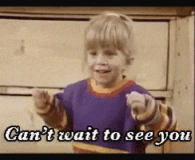

Korfanti Barnabás
Vizsgamunka
×

Házi feladat -- 10.01 (Pilis)
Házi feladat -- 10.09 (Szabadon választott oldal)
Házi feladat -- 10.15 (Tavak)
Házi feladat -- 10.23 (Szabadon választott oldal 2)
JS Első HF -- 11.06 (Webfejlesztés gyakorlása)